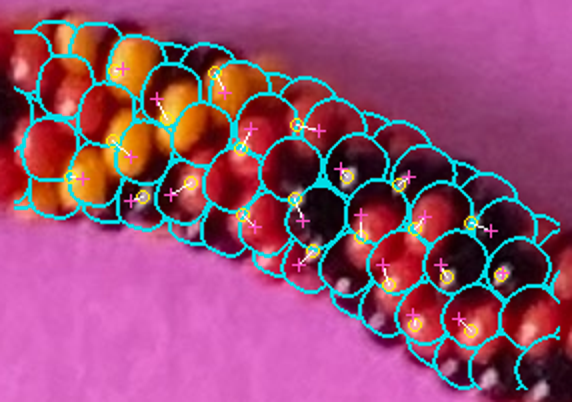
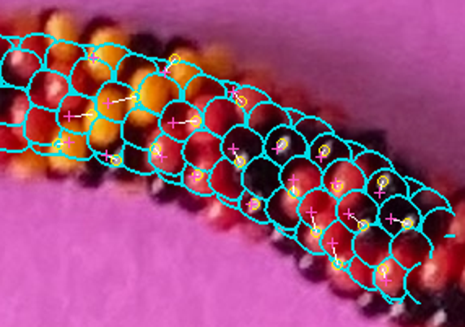
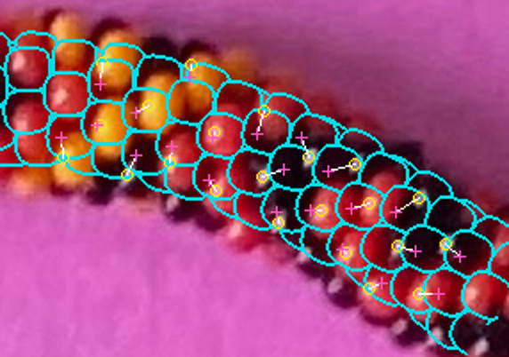
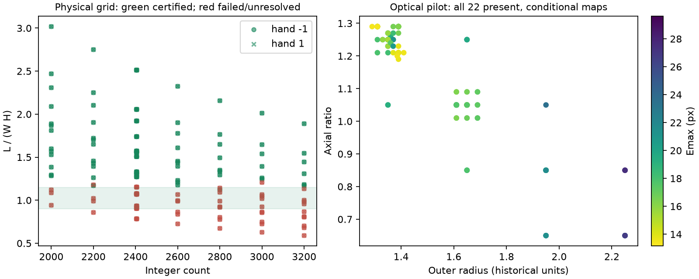
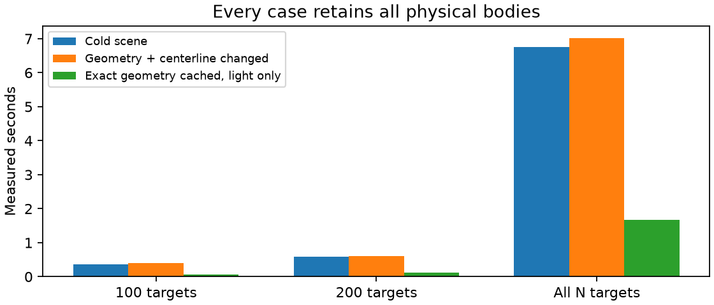

Original photograph crop

No adoption. Stop for review. Near-rise packing currently favors undersized beads and loses photographed pigment coverage. Different count families have provisional frozen maps.
Scientific report · Measured performance · Future cost plan · Independent verification
Cyan: modeled visible owner edges. Yellow circles: observed reflections. Magenta crosses: predicted reflections. White vectors: discrepancies. Model holes/occlusions are shown; no black photographic boundaries are invented.

N=2800; L/(WH)=1.1198; diameter=22.68px; centerline correction=0.000px.
N=2800; L/(WH)=1.1216; diameter=23.38px; centerline correction=1.500px.

N=2600; L/(WH)=1.1377; diameter=24.07px; centerline correction=2.742px.


